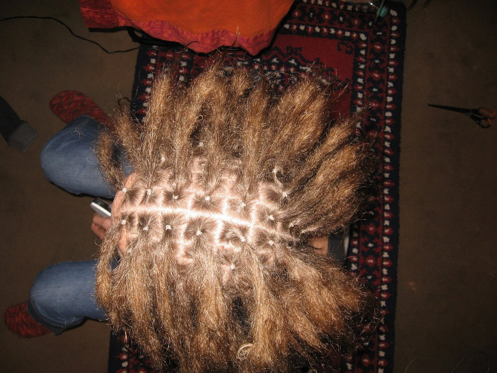
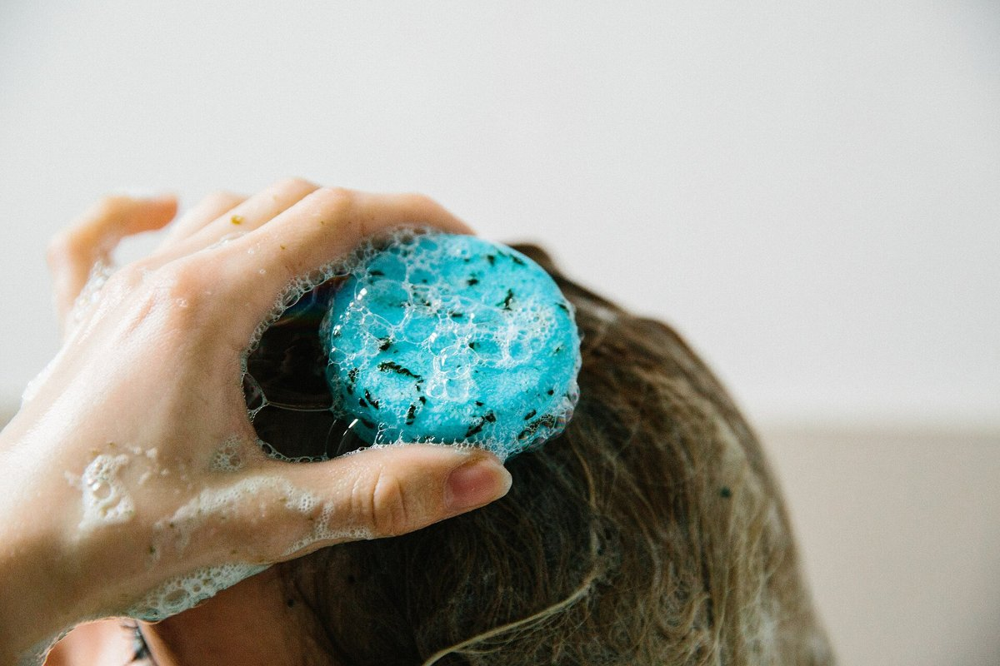
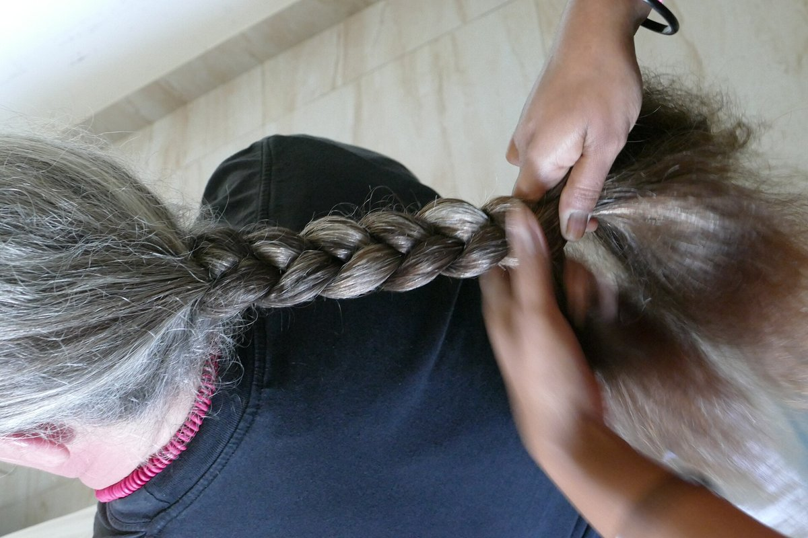
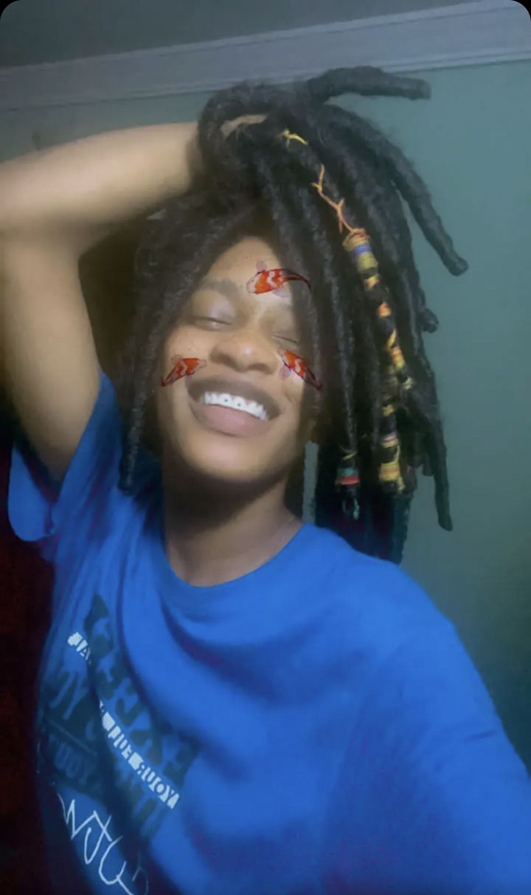
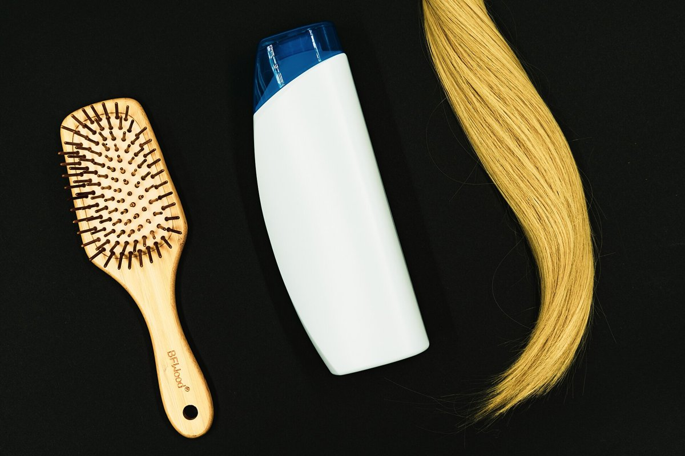
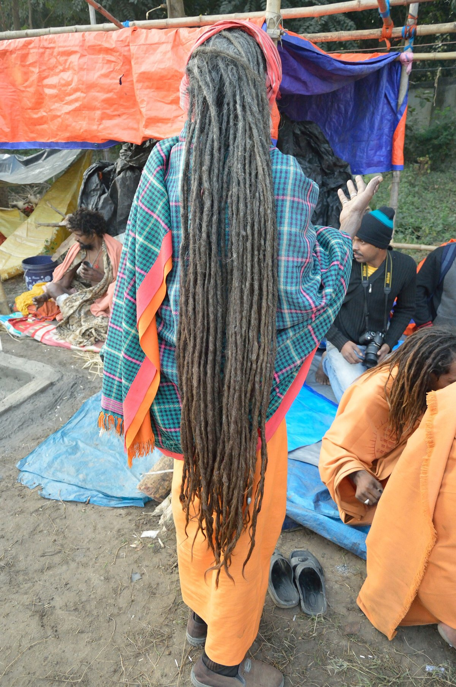

5 Stages, 3 Signs, 1 Check: Your Starter Locs Lock Right
You got your starter locs put in 3 weeks ago at a shop here in Miramar. On day one they were neat, small, and clean along each part. Now you stand in front of the mirror before work, somewhere off Miramar Parkway, and the coils look fuzzy. One at the back has come half undone. Your scalp sweats in the South Florida heat by noon, and you think the words every new loc wearer thinks: is this right, or is this failing? Most of the time, it is right. Starter locs look messy on the way to being locs. This post gives you the honest clock: the 5 stages your hair will pass through, the 3 signs that show locking is real, and the 1 check to run when you feel like giving up at month 3.
Starter locs begin to lock in about 3 to 6 months, and they reach full, mature form in about 12 to 24 months for most heads. Hair that is tight and coily, like 4C hair, tends to lock on the fast end of that range. Hair that is softer or more loose tends to take the long end. There is no safe way to rush it. Clean hair, gentle care, and time do the work. Frizz, swelling, and shrinking in the first months are not failure. They are the stages working.
First, what does it mean for hair to lock?
Locking means your hairs tangle, mat, and mesh into one solid rope of hair, called a loc. At the start, a loc is just a coil or a twist: hairs held in a shape by the style. They can come undone with ease, most of all in water. Over time, the hairs inside grab each other, knot in tiny ways, and stay. At the end, the loc holds its shape on its own, wet or dry. That change, from held shape to own shape, is locking.
Think of it like a ball of yarn and a felt pad. A fresh coil is like yarn wound in a neat ball. Pull one end and the ball can unwind. A mature loc is like felt. In felt, the fibers have been worked till they grip each other all through. You can not unwind felt. Your hair makes that same trip, from wound yarn to felt, and it makes it slow.
Why does texture change the clock? Texture means how tight or loose the curl of your hair is. Tight, coily hair has lots of bends in each strand. Bends grab bends. The hairs catch each other fast, the way hooks catch hooks. Loose hair has fewer bends. It slides more and grabs less, so the matting takes more time. Same process. Two speeds.
What are the 5 stages your starter locs will pass through?

Stage 1 is the starter stage, about months 0 to 3, and up to month 6 for some heads. Your locs still look like what they were made from: comb coils look like coils, two-strand twists look like twists. Comb coils are starter locs made by winding small parts of hair with a comb into tight coils. Two-strand twists are starter locs made by twisting 2 parts of hair around each other. In this stage the locs are soft and can unravel, most of all when they get wet. Frizz is normal. Neat parts matter more than neat locs right now.
Stage 2 is the budding stage, about months 3 to 6 for coily hair, and later for looser hair. Budding means small bumps and swelling form inside the loc, most of all near the middle and ends. A bud is a spot where the hairs inside have started to mat into a knot. Buds are the first real proof of locking. Your locs may look puffy and uneven. That puff is the mat forming.
Stage 3 is the shrinking stage, and it can run alongside budding. Your locs may look shorter than when you started, even though your hair is growing. Why? As the hairs mat, they pull in and pack tight, like a rope being twisted shorter as it gets stronger. New growth adds about half an inch a month at the scalp, but the packing can hide that growth for a while. Do not judge length in this stage. Judge whether the locs hold shape.
Stage 4 is the teenage stage, about months 6 to 12. Teenage locs have a mind of their own. Some lie flat, some stick out, some swell thick while the one next to them stays thin. They hold their shape now, and they can be styled more, but they do not look smooth or grown yet. Most people find this the hardest stage to look at, and it is the stage where good care pays off most.
Stage 5 is the mature stage, from about month 12 to month 24 and past it. Mature locs are firm all through, with a steady shape from root to tip. They swing, they hold styles, and they need less fuss. Even now they keep changing, slow and small, year by year. A loc journey does not end at mature. It just gets calm.
Add the stages up and you get the honest total: first buds in 3 to 6 months, real locking through the first year, full mature form in 12 to 24 months. Any post or person who tells you your locs will be fully locked in 4 weeks is selling you a story, not a timeline.
What are the 3 signs that your locs are locking right?

Sign 1: your locs hold their shape after a wash. In stage 1, a wash can undo a coil. When locking is real, the loc comes out of the wash still a loc. It may be fuzzy. It may swell. But it does not unwind. Test this with one loc at the back, not by picking at all of them each day.
Sign 2: buds you can feel. Run your fingers down a loc. If you feel firm bumps inside, most of all in the middle of the loc, that is matting. A loc that is still just a twist feels smooth and even all the way down, and it can be untwisted with ease. A budding loc can not.
Sign 3: less unraveling over time. Keep a simple count. In month 1, say 4 locs come loose after a wash. By month 4, if only 1 comes loose, your hair is learning the shape. The count going down, month by month, is the process working. The count does not need to be zero to be good news.
And here is the 1 check from the title. When you feel doubt, run the wash check on one loc: wash your hair as you always do, let it dry, then look at that one loc. Does it hold its shape? Can you feel a bud in it? Has it stayed in when it used to come out? If yes to 2 of the 3, your locs are on the clock they should be on. Write the date and the result on your phone. Doubt feels smaller when it has to argue with your own notes.
How often should you wash starter locs, and how do you do it without undoing them?

Clean hair locks better than dirty hair. Dirt and heavy product coat the hairs and make them slide, and sliding is the foe of matting. So yes, you wash starter locs. You just wash them with care.
In the first weeks, many locticians have clients wait about 2 to 4 weeks before the first wash, so the coils can set. After that, a wash about every 2 to 4 weeks is a common rhythm for starter locs, based on your scalp, your sweat, and your work. In Miramar, where heat and humidity run most of the year and an afternoon storm can soak you on the way to the car, your scalp may ask for the short end of that range. A scalp that itches and flakes is a scalp that needs a wash, locs or not.
Wash like this. Wet the hair well. Put shampoo on the scalp and rub with the pads of your fingers, the soft fronts, not your nails. Let the suds run down the locs as you rinse. Do not scrub the locs back and forth in your hands like a shirt. Scrubbing undoes coils. Rinsing cleans them. If a coil does come loose in the wash, do not panic. Note which one it was. Your loctician can re-coil it at your next visit, and one loose coil does not reset your clock.
Skip heavy creams and thick oils in the starter months. Heavy product builds up inside a young loc, and buildup inside a loc is hard to get out later. If your scalp feels dry, a light oil in small drops on the scalp is fine. Small means drops. Your locs need grip more than they need grease.
How often do you need a retwist, and what happens at one?

A retwist is a visit where your loctician re-twists the new growth at the root of each loc, so the loc keeps a clean base as your hair grows. New growth comes in loose, about half an inch a month. The retwist trains that new growth into the loc's shape.
For starter locs, a common rhythm is a retwist about every 4 to 6 weeks in the first months. As your locs mature, many people stretch that to every 6 to 8 weeks, and some go longer. Your loctician sets your rhythm based on your texture, your method, and how your locs are behaving. There is no one right count of weeks for all heads.
More is not better here. Retwisting too often, or too tight, can thin the roots over time. The root is what holds the whole loc to your head. A loc is only as strong as its base. If your scalp hurts after a retwist, or you see bumps at the roots, say so in the chair. A good retwist is snug, not sore.
At a retwist visit, expect a wash or scalp clean, the retwist itself, and a check of any loose or budding locs. It is also your best time to ask the timeline question with your own hair in front of a pro: are my locs on track for my texture? At KuuStore in Miramar, when you book starter locs or a retwist, the deposit is $25 for all services, applied in full toward your total. Your balance on the day is your service price minus the $25 already paid.

What can slow your locs down, and what should you not do?

Hands in your hair all day is the top slow-down. Each time you pull, twist, and play with a young loc, you undo a bit of the matting your hair did that week. Look, take your photo, and then leave them alone.
Taking starter locs down and redoing them resets the clock to zero. A coil undone at month 2 is a day-one coil again. If a style choice was wrong, a pro can talk you through real fixes. But the fix is almost never a full restart.
Skipping washes for months slows locking too. Very dirty hair gets coated, and coated hair slides instead of matting. The old idea that locs must be dirty to lock is wrong. Clean, dry, left-alone hair locks best.
Sleeping with no cover can rough up young locs and pull lint into them. Lint is the tiny fibers from cloth that get stuck in hair. A satin or silk cover at night, or a satin pillow case, cuts friction while you sleep. Friction means rubbing, and rubbing is what undoes coils and pulls in lint.
Last, beware of any product or trick that claims to lock hair fast. Wax is the worst of them. Wax coats the hair, blocks real matting inside, and builds up into a mess that can take months to clean out. Your locs would look locked while staying loose inside. That is a fake lock, and pros have to undo it. Time is the real method. There is no second real method.
How do you get through the hard middle months without quitting?

The quit point for most people is months 3 to 6. The locs are fuzzy, they shrink, they do not look like the photos that made you want locs, and the neat day-one look is long gone. Here is how people who make it to year 2 get through.
Take one photo a month, same light, same angle. Day to day, change is too small to see. Month to month, in photos, the change is clear. Your photo roll is proof when your mirror feels like a liar.
Wear the stages with styles that suit them. Head wraps, hats for sun, and soft styles that do not pull can carry a fuzzy month with grace. Ask your loctician what styles are safe at your stage. Some styles need firm locs and must wait for the teenage stage or later.
Keep your visits on rhythm. The retwist visit is not just care. It is a check-in where a pro sees your locs, fixes the loose ones, and tells you the truth about your stage. Skipping 3 visits in the fuzzy months is how small issues turn into a restart.
And hold the long view with real math. Say you are at month 4 and your locs bud at month 5. You are about one third of the way to a full year of locking. 4 months done, 8 to go till month 12. The part behind you was the most fragile part. The part ahead is mostly watching and keeping rhythm. People quit at the hardest point, right before the buds make it feel real.
Checklist:
- Write down your start date, your method (comb coils or two-strand twists), and your texture notes
- Wait about 2 to 4 weeks before your first wash, then wash about every 2 to 4 weeks based on your scalp
- Wash the scalp with your finger pads and let suds rinse down the locs, with no scrubbing back and forth
- Book retwists about every 4 to 6 weeks in the starter months, snug but never sore
- Sleep in a satin or silk cover to cut friction and keep lint out
- Take one photo a month in the same light and angle to track real change
- Run the 1 check in doubt: after a wash, does one back loc hold shape, show a bud, and stay in?
- Skip wax and heavy creams that coat hair and block real matting
Your free tool for this step
Use the Appointment Reminder Planner on the KuuStore site: https://kuustore.life/appointment-reminder-planner.html
A reminder planner is a page that helps you set the dates you need to remember, so a long plan does not depend on your memory alone. A loc journey is a long plan: washes every few weeks, retwists every 4 to 6 weeks, and stage checks month by month for a year or more. That is a lot of dates to hold in your head while life does its own thing.
Here is how to use it for this step. Open the planner. Put in your retwist rhythm first: if your loctician set you at every 5 weeks, set a reminder for each visit date, with a few days of lead time to book. Then add your wash days. Then add a monthly photo reminder on your start date's number, so month 3, month 6, and month 12 do not slip past you. When a reminder lands, you act on it that day: book the chair, do the wash, take the photo.
The planner does not book for you, and it does not replace your loctician's rhythm. If your loctician changes your retwist gap at a visit, update the planner that same day. What the planner does is keep a 12 to 24 month journey from falling apart in the fuzzy months, when most quits happen because a visit got missed, then one more got missed, and the locs went their own way.
The bottom line
Starter locs take 3 to 6 months to begin locking and 12 to 24 months to mature, with tight, coily hair on the fast end and looser hair on the long end. They pass through 5 stages: starter, budding, shrinking, teenage, and mature. Frizz and shrinkage are stages, not failure. The 3 signs of real locking are locs that hold shape after a wash, buds you can feel, and less unraveling month by month. When doubt hits, run the 1 check on one back loc and trust your dated notes over your mood.
Your next step is small. Write down your start date and your method. Set your wash and retwist rhythm. Take this month's photo. Then let time do the part only time can do.